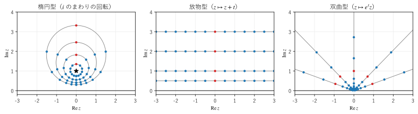

第 5 章 等長変換
ユークリッド平面では、平行移動、回転、鏡映（折り返し）が距離を変えない変換であり、図形の合同はこれらの変換で定義される。この章では、双曲平面で距離を変えない変換を調べる。上半平面モデルでは、これらの変換が 2 行 2 列の実数の行列で表せることが重要である。
等長変換とは
双曲平面からそれ自身への写像 \(f\) が、任意の 2 点 \(z\)、\(w\) について
を満たすとき、\(f\) を等長変換という。等長変換は測地線を測地線に移し、角度と面積も変えない。2 つの図形が等長変換で重なるとき、2 つの図形は合同である。
上半平面モデルの等長変換
実数 \(a, b, c, d\) で \(ad - bc = 1\) を満たすものに対して、メビウス変換
を考える（メビウス変換の一般的な性質は付録 Bにまとめた）。この変換は上半平面の等長変換である。理由は次のとおりである。
まず、\(f\) は上半平面を上半平面に移す。\(ad - bc = 1\) と \(a, b, c, d\) が実数であることから
が成り立ち、\(\Im z > 0\) ならば \(\Im f(z) > 0\) である。次に、\(f\) の微分は \(f'(z) = 1/(cz + d)^2\) なので、微小な線分の長さは \(|df| = |dz| / |cz + d|^2\) に変わる。したがって
となり、計量 \(ds = |dz| / y\) が変わらない。計量が変わらなければ、曲線の長さも、2 点の距離も変わらない。
代表的な例を挙げる。
変換 |
行列 \(\begin{pmatrix} a & b \\ c & d \end{pmatrix}\) |
意味 |
|---|---|---|
\(z \mapsto z + t\) |
\(\begin{pmatrix} 1 & t \\ 0 & 1 \end{pmatrix}\) |
実軸方向の平行移動 |
\(z \mapsto \lambda z\) （\(\lambda > 0\)） |
\(\begin{pmatrix} \sqrt{\lambda} & 0 \\ 0 & 1/\sqrt{\lambda} \end{pmatrix}\) |
原点を中心とする拡大・縮小。双曲平面では虚軸に沿った移動 |
\(z \mapsto -1/z\) |
\(\begin{pmatrix} 0 & -1 \\ 1 & 0 \end{pmatrix}\) |
点 \(i\) のまわりの 180 度の回転 |
2 つ目の変換は、ユークリッド平面では拡大・縮小であり図形の大きさを変えるが、双曲平面では大きさを変えない。第 4 章の図 5で、高さが 2 倍の位置にある円が、ユークリッドの意味で 2 倍の大きさに描かれていたのはこのためである。
上半平面の向きを保つ等長変換は、すべて式 (8) の形に書けることが知られている。向きを逆にする等長変換（鏡映など）は、これに虚軸に関する鏡映 \(z \mapsto -\bar{z}\) を合成したものである。
行列で表す利点
メビウス変換を行列 \(M = \begin{pmatrix} a & b \\ c & d \end{pmatrix}\) で表すと、2 つの変換の合成は行列の積に対応する。\(f_1\)、\(f_2\) を表す行列を \(M_1\)、\(M_2\) とすると、\(f_1 \circ f_2\) は \(M_1 M_2\) で表される。逆変換は逆行列で表される。また、\(M\) と \(-M\) は同じ変換を表す。
このため、上半平面の向きを保つ等長変換の全体は、行列式 1 の実 2 次正方行列の群 \(\mathrm{SL}(2, \RR)\) を \(\{ \pm I \}\) で割った群 \(\mathrm{PSL}(2, \RR)\) と同じものになる。双曲幾何学の多くの計算を、2 行 2 列の行列の計算に帰着できる。
等長変換の分類
恒等変換でない、向きを保つ等長変換は、行列のトレース \(\tr M = a + d\) の絶対値によって 3 種類に分類できる。不動点（\(f(z) = z\) となる点）の方程式 \(cz^2 + (d - a) z - b = 0\) の判別式が \((a + d)^2 - 4\) になることから、次のように分かれる。
型 |
条件 |
不動点 |
動き |
|---|---|---|---|
楕円型 |
\(|\tr M| < 2\) |
上半平面の中に 1 点 |
不動点のまわりの回転 |
放物型 |
\(|\tr M| = 2\) |
無限遠点に 1 点 |
その無限遠点を中心とするホロサイクル（第 7 章）に沿った移動 |
双曲型 |
\(|\tr M| > 2\) |
無限遠点に 2 点 |
2 つの不動点を結ぶ測地線（軸）に沿った移動 |
3 つの型の典型例で点の動きを描いたものが図 7である。灰色の線は、変換の行列をパラメーター \(t\) で連続的に変えたときの点の軌跡、青の点は \(t\) を一定の間隔で変えたときの位置、赤の点は出発点である。


図 7 楕円型、放物型、双曲型の等長変換による点の動き
サンプルの全体：ch05_isometries.py
楕円型（左）：行列 \(\begin{pmatrix} \cos t & \sin t \\ -\sin t & \cos t \end{pmatrix}\) は、点 \(i\) のまわりの角度 \(2t\) の回転を表す。軌跡は \(i\) を中心とする双曲的な円であり、図では上にずれたユークリッドの円になる。下側で点の間隔が狭いのは、実軸に近いほど同じ双曲距離が短く描かれるからである。
放物型（中央）：\(z \mapsto z + t\) は点を水平に動かす。軌跡の水平な直線は、無限遠点 \(\infty\) を中心とするホロサイクルである。点の間隔は図の上ではどの高さでも同じだが、双曲的には低い位置ほど 1 回の移動距離が大きい。
双曲型（右）：\(z \mapsto e^t z\) は、虚軸（軸）に沿って点を動かす。軸の上の点の移動距離は \(t\) であり、軸から離れた点は原点を通る半直線（等距離線、第 7 章）に沿って動き、移動距離は \(t\) より大きい。
双曲型の変換が軸の上の点を動かす距離（移動距離）は、トレースから
で求まる。これは、軸の上にない点の移動距離より小さく、変換で動く距離の最小値である。
数値で確かめる
いくつかの行列について、トレースで型を判定し、ランダムに選んだ 2 点の距離が変換の前後で変わらないことを確かめる。
21def classify(m: Matrix) -> str:
22 """トレースの絶対値と 2 の大小で、等長変換の型を判定する（m は恒等変換でないとする）."""
23 trace = abs(float(np.trace(m)))
24 if math.isclose(trace, 2.0):
25 return "放物型"
26 return "楕円型" if trace < 2.0 else "双曲型"
[[cos 0.5, sin 0.5], [-sin 0.5, cos 0.5]]: det = 1.000, |tr| = 1.7552, 楕円型
距離の差の最大値 1.76e-15
[[1, 1], [0, 1]]: det = 1.000, |tr| = 2.0000, 放物型
距離の差の最大値 0.00e+00
[[2, 0], [0, 1/2]]: det = 1.000, |tr| = 2.5000, 双曲型
距離の差の最大値 0.00e+00
[[2, 1], [1, 1]]: det = 1.000, |tr| = 3.0000, 双曲型
距離の差の最大値 3.55e-15
2 arcosh(|tr| / 2) = 1.386294
d(i, 4i) = 1.386294
d(1 + i, 4 + 4i) = 1.847246
サンプルの全体：ch05_classify.py
どの行列でも、距離の差は丸め誤差の程度（\(10^{-15}\) 程度）である。双曲型の行列 \(\begin{pmatrix} 2 & 0 \\ 0 & 1/2 \end{pmatrix}\) （\(z \mapsto 4z\)）では、軸の上の点 \(i\) の移動距離が \(2 \arcosh 1.25 = \ln 4\) に一致し、軸の外の点 \(1 + i\) の移動距離はそれより大きい。
円板モデルの等長変換
円板モデルの向きを保つ等長変換は、\(|a| < 1\) の複素数 \(a\) と実数 \(\theta\) を使って
と書ける。この変換は点 \(a\) を中心 \(0\) に移し、その後で中心のまわりに角度 \(\theta\) だけ回転する。逆に、中心 \(0\) を点 \(a\) に移す変換は \(z \mapsto (z + a) / (1 + \bar{a} z)\) である。
この性質は、計算と作図で非常に役に立つ。
任意の点を中心に移せるので、ある点のまわりの性質は、中心のまわりで調べれば十分である。中心では、測地線が直径になり、双曲的な円がユークリッドの円になるので、計算が簡単である。
円板モデルは等角であり、等長変換も角度を変えないので、2 本の測地線のなす角は、交点を中心に移してから直径どうしの角度として測れる。
本書のサンプルの共通モジュール hg.py は、測地線の作図や角度の計算をこの方法で行っている（第 10 章）。
双曲平面はどの点でも、どの方向にも同じ性質を持つ（一様かつ等方的である）。ユークリッド平面と同じく、特別な点や特別な方向はない。モデルの図で中心や境界が特別に見えるのは、地図の描き方の都合にすぎない。
鏡映
測地線 \(L\) に関する鏡映は、\(L\) の上の点を動かさず、\(L\) の両側を入れ替える、向きを逆にする等長変換である。
上半平面モデルで、\(L\) が中心 \(c\)、半径 \(\rho\) の半円のとき、鏡映はその円に関する反転 \(z \mapsto c + \rho^2 / (\bar{z} - \bar{c})\) である。\(L\) が垂直な半直線 \(x = c\) のときは、ユークリッドの鏡映 \(z \mapsto 2c - \bar{z}\) である。
円板モデルでは、\(L\) を直径に移す等長変換で移してから直径に関するユークリッドの鏡映を行い、元に戻せばよい。
鏡映を繰り返すと、1 つの多角形から平面全体を敷き詰める多角形を作れる。第 8 章のタイリングは、この方法で描いている。
双曲面モデルの等長変換
双曲面モデルでは、等長変換は 3 次元の線形変換で表される。ミンコフスキーの双線形形式 \(B\) を保ち（\(B(Ax, Ay) = B(x, y)\)）、上半分の双曲面を上半分に移す 3 行 3 列の行列 \(A\) の全体をローレンツ群と呼ぶ。\(\cosh d = B(x, y)\) なので、\(B\) を保つ変換は距離を保つ。
\(x_0\) 軸のまわりの回転は、円板モデルの中心のまわりの回転（楕円型）にあたる。
\(x_0\) 軸と \(x_1\) 軸の張る平面の中の「双曲的な回転」
\[\begin{split}\begin{pmatrix} \cosh t & \sinh t & 0 \\ \sinh t & \cosh t & 0 \\ 0 & 0 & 1 \end{pmatrix}\end{split}\]は、\(x_1\) 軸方向への距離 \(t\) の移動（双曲型）にあたる。
この行列は、特殊相対論で慣性系を乗り換えるときのローレンツ変換（ブースト）と同じものである（第 9 章）。
この章のまとめ
上半平面モデルの向きを保つ等長変換は、行列式 1 の実行列によるメビウス変換であり、合成は行列の積で計算できる。
等長変換は、トレースの絶対値と 2 の大小により、楕円型、放物型、双曲型に分かれる。
円板モデルでは、任意の点を中心に移す等長変換があり、計算を中心での計算に帰着できる。
双曲面モデルの等長変換はローレンツ群の線形変換であり、特殊相対論のローレンツ変換と一致する。